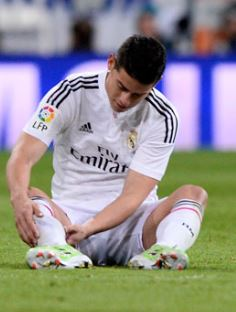

James se lesiona en la rodilla izquierda y regresa a España
James Rodríguez se lesionó en el último entrenamiento de Colombia y encendió todas las alarmas
en el Real Madrid. El jugador se hizo daño en la rodilla izquierda y,
a la espera de lo que determinen las pruebas que se le realicen este viernes,
podría tener un esguince en el ligamento interno de su rodilla izquierda.
Queda por comprobar el grado de ese posible esguince y revisar en dichas pruebas
que no haya más daños en la articulación para saber con más exactitud el tiempo de baja.
El jugador regresará en las próximas horas a España para ponerse en manos de los servicios médicos del Real Madrid.
En principio, y a falta de las pruebas que determinen el alcance exacto de la lesión,
no parece que se trate de una lesión grave, pero sí lo suficiente como para que James abandone
la concentración de Colombia y regrese a Madrid,
según ha podido saber MARCA de fuentes de la Federación Colombiana.

Ganaté la camiseta de América de Cali
Registraté y Participa en el sorteo de la Camiseta de América


{kind=link}
{kind=link}
{kind=link}